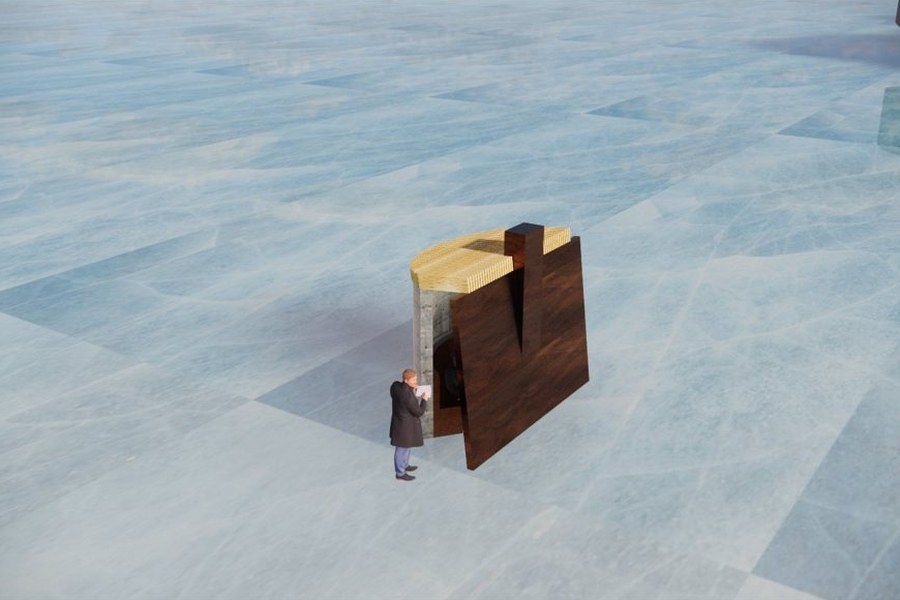
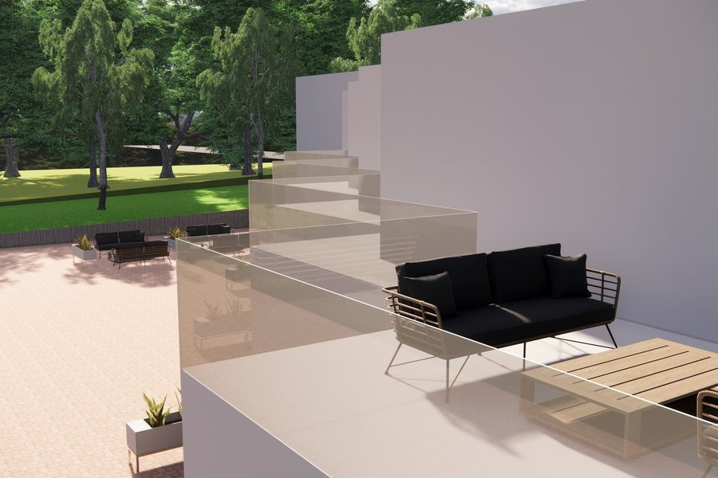
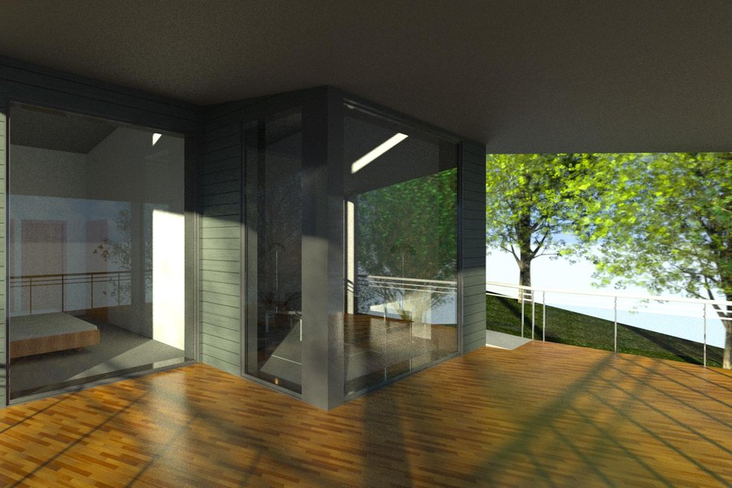
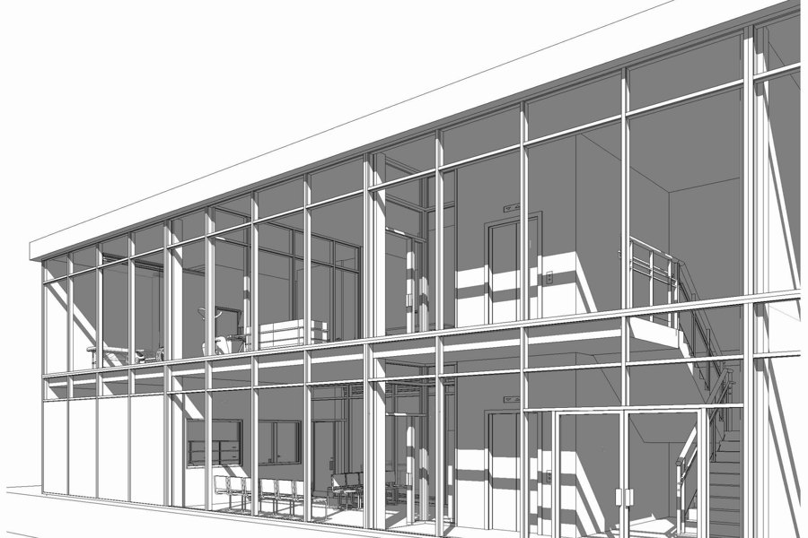
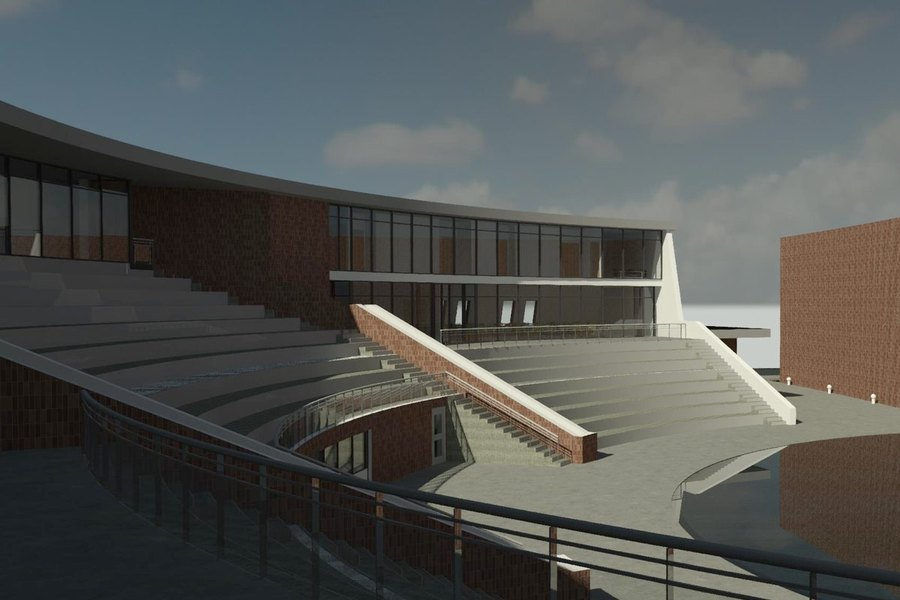
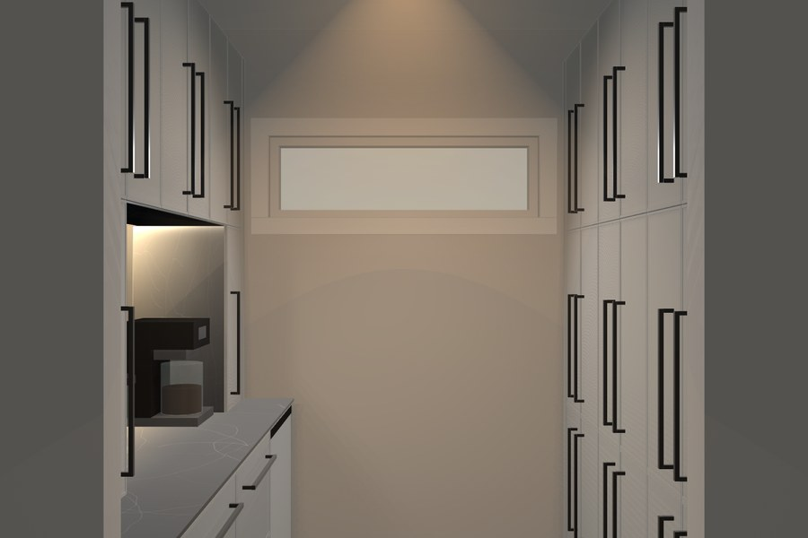
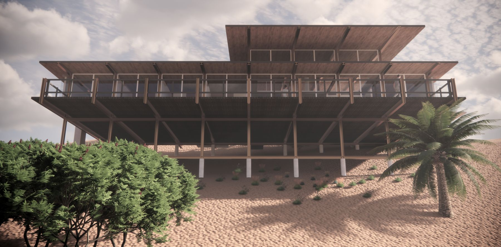

Architecture portfolio
Architecture Technician (Algonquin College, Honours diploma) and Bachelor of Music in Jazz Piano Performance with a minor in Art History (Carleton University). Based in Ottawa.
Design Studio projects, rebuilt for this portfolio with scaled drawings, and one personal project.

Design Studio, Winter 2024Warming HutFire and Ice Class exercise on the Warming Huts brief, Winnipeg, MB. A Cor-ten chimney and a slanted wall shelter the bench from the wind.
Design Studio, Winter 2024Perth Waterfront B&BThe Terraces A linear-cluster guest house on a river slope in Perth, ON: eight suites face the water and the services face the road.
Design Studio, Winter 2024Muskoka CottageThe Treehouse A Muskoka lake cottage as four small buildings on stilts, joined by exterior walkways to keep tree removal to a minimum.
Design Studio, Fall 2024Medical Clinic245 Dal Space planning for a ByWard Market clinic, revised to share its entry with a sports therapy centre upstairs.
Design Studio, Fall 2024Cultural CentreThe Amphitheatre A brick crescent around a stepped amphitheatre and a water feature that doubles as splash pad, stage or ice rink. Nepean Museum site, Ottawa.
Interactive 3D and drawing setSecond Floor Pantry Linen pantry and dry bar from site measurements: a 3D model and a nine-sheet drawing set. AI-assisted, not drafted in CAD.Full sheet sets, readable at any zoom. School projects on fictitious sites, drawn to course briefs. Open any set to zoom in and measure.
Architectural photography: vaults, façades, interiors and streets.
Drawings in pencil and ink: interiors, a porch, a glass tower and a cathedral, drawn from life, with one imagined hillside.

Study, 2023Rhythm and Repetition in Case Study House #26 A comparison of Beverley Thorne's steel-frame house with the structure of a jazz tune.
sestafanos@icloud.com
+1 613 854 5877
LinkedIn
Ottawa, Ontario